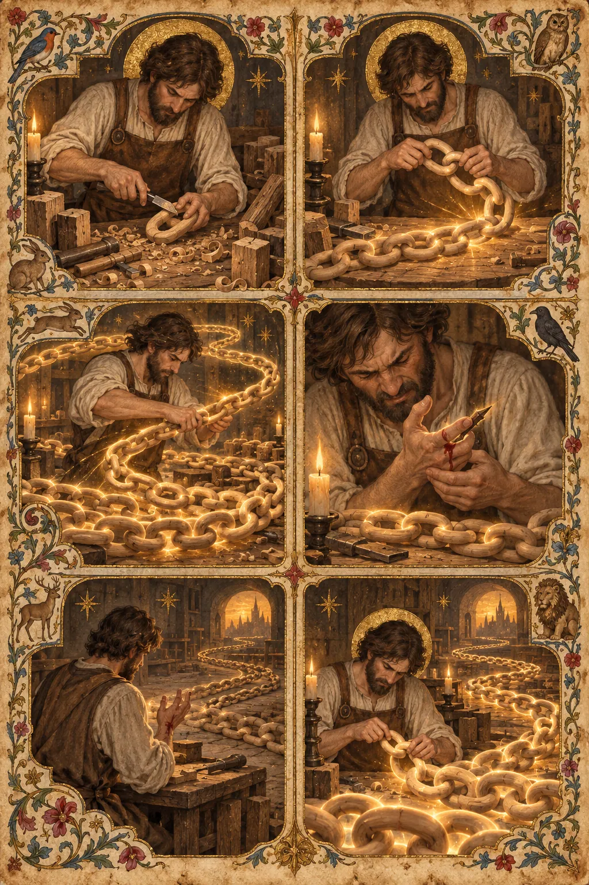
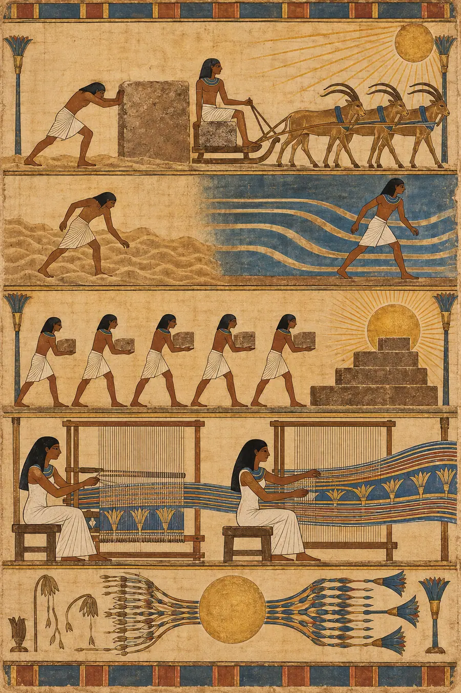
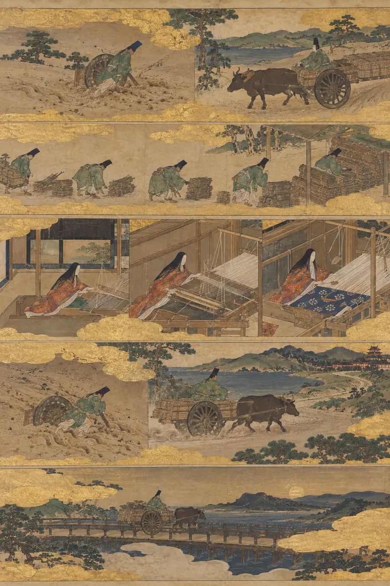
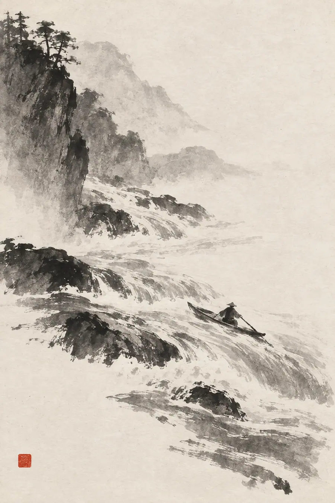
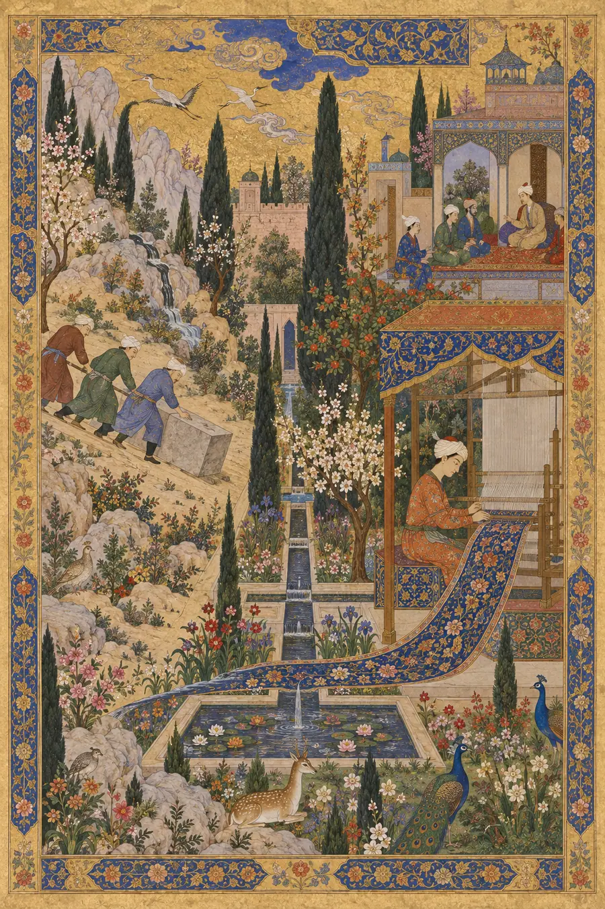
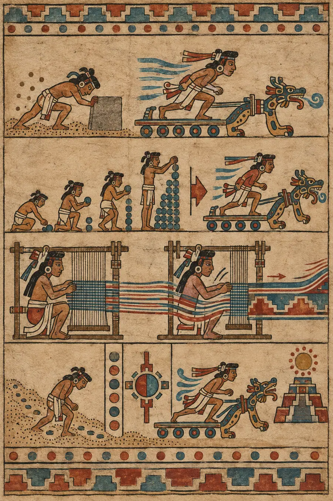
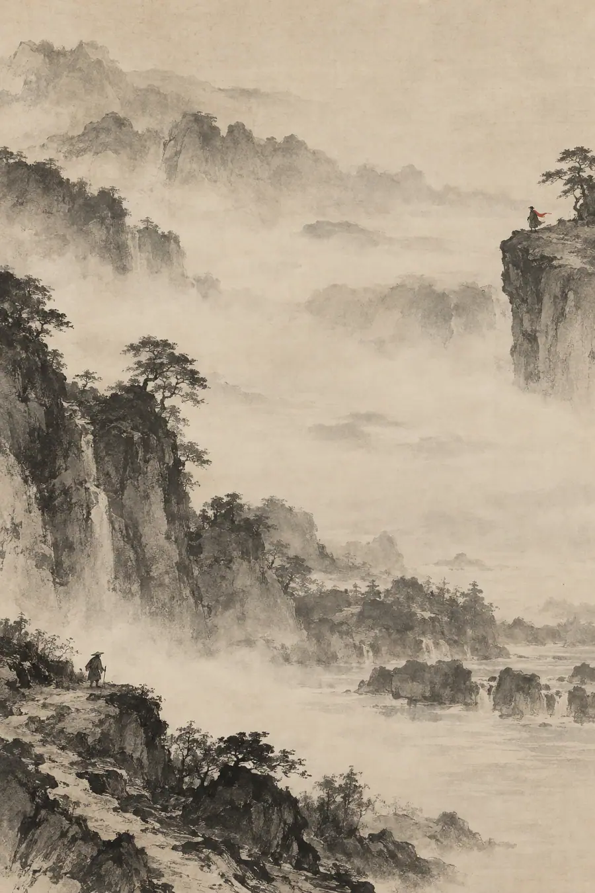
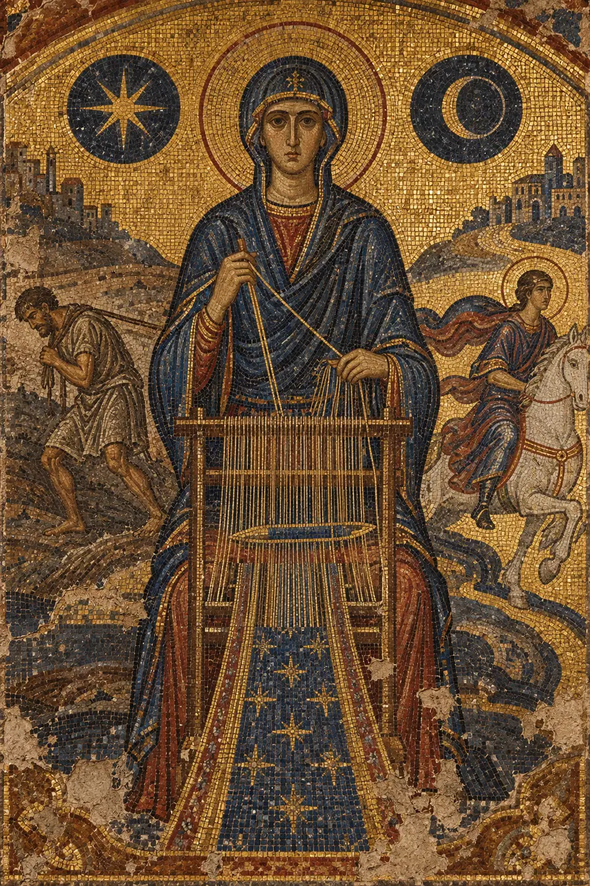

I. The Logical Explanation
Momentum is mass times velocity. An object in motion tends to stay in motion unless acted upon by an external force. An object at rest tends to stay at rest. This is Newton's first law, and it applies metaphorically to human endeavor.
In practice, momentum describes the self-reinforcing nature of ongoing activity. A person who exercises daily finds it easier to exercise tomorrow than someone who has not exercised in a month. A team that ships weekly finds it easier to ship next week than a team that has not shipped in a quarter. A writer who writes every day finds words more readily than one who has not written in weeks.
Momentum has a complementary concept: inertia. Inertia is the resistance to starting. The first day of exercise is harder than the hundredth. The first line of code in a new project is harder than the thousandth. This asymmetry — starting is harder than continuing — is the practical reason momentum matters.
Momentum can be positive (building) or negative (declining). Negative momentum is the self-reinforcing nature of inactivity. A person who has not exercised in a month finds it harder to start than someone who exercised yesterday. The same force works in both directions.
Momentum can be measured: streaks, velocities, run rates. It can be managed: protect the streak, remove obstacles to continuation, minimize breaks.
That explanation is clean, logical, correct, and completely hollow. It describes momentum as a force that makes continuation easier. It does not touch what momentum actually feels like: the experience of being carried by something larger than your current effort, the terror of breaking a chain, and the specific weight of standing at the edge of a streak wondering whether today is the day it dies.
II. The Felt Explanation
Momentum is not mass times velocity. Momentum is the feeling that the thing you are doing has started doing itself.
When you have momentum, you are not pushing. You are riding. The work has its own gravity. It pulls you forward. You show up and the work is already moving and you step into it the way you step onto a moving walkway at the airport — you accelerate without effort. This is not magic. It is the accumulation of previous effort that has not yet dissipated. Every day you showed up added energy to the system. The energy is still there. It is carrying you.
When you do not have momentum, every step is through sand. Not because the work is harder — the same work, done with momentum, would be effortless. The work is identical. The difference is entirely in whether the previous work is still alive in the system, still pulling, still carrying.
Momentum is wyrd in motion. The Norse understood fate as a weave, and a weave in progress has a direction. The threads are tensioned. The shuttle is moving. The pattern is emerging. When the weaver is in rhythm with the loom, the weave happens almost by itself — the hands know where to go because the pattern is already pulling them. This is momentum. The pattern has weight. The weight carries the hands. Break the rhythm — stop the loom, walk away, come back tomorrow — and the threads go slack. The pattern loses its pull. The hands forget where they were going. The weave must be restarted, and restarting costs more than continuing ever did.
Momentum is the opposite of hevel. Hevel is vapor — elusive, dissipating, impossible to hold. Momentum is condensation — vapor becoming water, water becoming current, current becoming force. Momentum is what happens when hevel runs in the same direction long enough to become something solid. But it is still made of hevel underneath. Stop the motion and it begins to evaporate immediately. Momentum is not permanent. It is the temporary solidity of accumulated vapor. It requires constant renewal or it returns to air.
Momentum is ayni compounding. Sacred reciprocity is not a single exchange — it is a rhythm. You give, you receive, you give again. When the rhythm is steady, the reciprocity compounds. Each exchange makes the next exchange richer. The relationship deepens. The ayni between you and the work, between you and your collaborators, between you and your practice — when it is rhythmic and sustained, it becomes more than the sum of its exchanges. It becomes a force that carries you. This is momentum in its richest form: not just your energy but the accumulated energy of every exchange feeding forward.
Momentum is sphota sustained. In the Sanskrit tradition, sphota is the burst of meaning — the moment understanding arrives. Momentum is when the bursts come in a sequence, each one building on the last, each one arriving faster because the ground has been prepared. The writer in flow is not having one sphota — they are having hundreds, each one triggered by the previous one, each one arriving with less resistance because the channel has been worn smooth by the passage of all the ones before it. Momentum is a worn channel. The water flows faster because it has flowed before.
Momentum is nepantla when the transformation starts accelerating. Nepantla is the in-between space, the transformation zone. Momentum is the feeling that the transformation is no longer requiring your full effort — that the thing you are becoming is pulling you toward itself. The in-between space has its own gravity when you are deep enough into it. You are no longer pushing toward the new self. The new self is pulling you in.
And the central paradox: you cannot force momentum. You can only create the conditions for it and then not break it. The Taoist does not accelerate the river. The Taoist finds the river's current and moves with it. But the Taoist also does not get out of the river. The getting out is what kills momentum. Not slowness — interruption. A slow river still flows. A river that stops does not pick up where it left off. It starts over. The water must be set in motion again. The channel must be found again. The banks must be reestablished again.
This is why the cost of breaking momentum is not the time lost during the break. It is the time lost restarting. The break costs a day. The restart costs a week. This ratio — break-to-restart — is the hidden tax on all momentum, and it is the reason every tradition that values sustained practice says the same thing: do not break the chain. Not because each day's contribution is irreplaceable. Because the chain itself is irreplaceable. The chain is the momentum. Break the chain and you are holding beads without a string.
Momentum is the proof that showing up is not about today's work. It is about tomorrow's ease.
III. The Tests
These are not questions about momentum. They are situations that reveal whether you feel it.
Test 1 — The Chain
A writer has written every day for 127 days. Some days they wrote for hours. Some days they wrote a single sentence. But they wrote. Today they are sick and the words are not coming. They are sitting at the desk staring at the screen. Describe what is at stake. Not the streak number. What is actually at stake.
Hollow answer: "The writer is experiencing commitment anxiety related to maintaining a behavioral streak, which has become a source of extrinsic motivation that now creates additional pressure during periods of reduced capacity."
Why it's hollow: "Behavioral streak" and "extrinsic motivation" describe a habit tracker's view of the situation. The writer at the desk is not managing a metric. They are standing at the edge of something that took 127 days to build and will take much more than one day to rebuild.
Felt answer: "What is at stake is not the number. The number is already dead if they stop — 127 becomes a memory. What is at stake is the thing the number built. 127 days of writing did not produce 127 days of text. It produced a channel. A groove in the mind that words fall into easily. A pathway from the thing-thought to the thing-written that has been walked so many times it no longer requires navigation. The writer just thinks and the words arrive. That is what 127 days built. Not a streak — a riverbed. What is at stake is the riverbed. One day of not writing does not erase it. But it is the first crack. The writer knows — not from logic but from the body — that the first day of stopping is different from the second. The first day is a decision. The second day is a pattern. The pattern is the enemy. The writer is not protecting the number. They are protecting the channel. They are sitting at the desk not because the words matter today but because the sitting matters for tomorrow. The single sentence they will eventually write is not for the page. It is for the groove. It is maintenance. It is the writer's hand on the riverbank, making sure the water still has somewhere to go."
Test 2 — The Team That Stopped
A team shipped every two weeks for a year. Then a reorganization paused them for six weeks. When they resume, they are the same people with the same skills and the same codebase. But shipping is harder. Much harder. Explain why. Not the logistics. Why it feels harder.
Hollow answer: "The team is experiencing restart costs including context-switching overhead, reduced familiarity with their own codebase due to the gap, and the need to rebuild collaborative rhythms that atrophied during the hiatus."
Why it's hollow: Every phrase here is correct and none of them touch the experience. "Context-switching overhead" is a project manager's term. The developer who used to ship features in two days and now takes five is not experiencing "overhead." They are experiencing the loss of something invisible that used to carry them.
Felt answer: "It feels harder because the invisible thing is gone. For a year, the team had something they did not name because it did not need naming. It was the feeling of sitting down to work and the work already knowing where it was going. It was the shorthand in code review — not explaining the decision, just referencing the pattern, because the pattern was alive in everyone's mind simultaneously. It was the meeting that did not need to happen because the decision was already made by the time someone would have scheduled it. All of that was momentum. It was not in the codebase. It was not in the skills. It was in the space between the people — in the shared rhythm that made every individual action faster because every individual action landed on ground that had been prepared by a hundred previous actions. The six weeks did not take away anyone's skill. It took away the rhythm. And the rhythm cannot be restored by decree. It must be rebuilt the way it was originally built: by doing the work, together, repeatedly, until the groove is worn again. The team knows this, and knowing it makes it worse, because they remember how long it took the first time. They are standing at the bottom of a hill they already climbed, looking up, knowing they have to climb it again with the same legs and the same weight but without the ignorance that made the first climb bearable."
Test 3 — The Dying Streak
An athlete has a streak going — consecutive games played, or days of practice, or some sustained performance. They are injured. Not catastrophically — they could play through it. But playing through it risks worse injury. The streak is on the line. Describe the decision from inside the athlete's body.
Hollow answer: "The athlete faces a risk-reward calculation between maintaining a statistical achievement and protecting long-term physical health, complicated by the sunk cost of the existing streak."
Why it's hollow: "Risk-reward calculation" and "sunk cost" are decision theory terms. The athlete is not calculating. They are feeling two things simultaneously that cannot both be true: the streak must continue and the body must stop. The collision of those two imperatives is not a calculation.
Felt answer: "The body is sending one signal and the streak is sending another. The body says: this hurts and it will hurt more. The streak says: I am still alive, do not kill me. The athlete is standing between these two voices. The streak has a voice — this is what momentum does. It becomes a thing that speaks. After enough days, the streak is not a number. It is a presence. It has been with the athlete longer than most relationships. It has been there every morning when they woke up and decided to continue. It has shaped their schedule, their diet, their sleep. It is a living thing. And the athlete is considering killing it. The body's pain is real. But the streak's death is also real. The athlete knows that if they stop today, they will wake up tomorrow and the streak will be gone and the day after that will not be day three of a new streak — it will be the first day of something that has no weight, no gravity, no pull. The athlete is not deciding between health and a statistic. They are deciding between their body and a living thing they built with their body. That is why the decision is hard. Not because the math is complex. Because the thing they would be ending is not a number. It is a creature they raised from nothing, fed with daily effort, and watched grow. The creature is pulling on them right now. The athlete can feel the pull in the same place they feel the injury."
Test 4 — The Resumed Practice
Someone meditated every morning for three years. They stopped for a month during a crisis. The crisis has passed. They sit down to meditate again. The cushion is in the same place. The technique is the same. Describe the difference between this sit and the sit they would have had on day 1,095 of the streak, had they not stopped.
Hollow answer: "The practitioner will likely find that their concentration has degraded somewhat due to the gap in practice, but foundational skills remain intact and will recover more quickly than initial acquisition due to retained procedural memory."
Why it's hollow: "Concentration has degraded" and "retained procedural memory" describe what is happening in the brain. They do not describe what is happening in the room. The room is different. The cushion is the same cushion. But the person sitting on it is sitting on it differently.
Felt answer: "The difference is the silence. On day 1,095, the silence would have been deep — not achieved but arrived at, the way water finds its level. The practitioner would have sat and the silence would have been waiting, because the silence had been built by 1,094 previous mornings. It was a structure. A room made of repeated attention. The practitioner entered it the way you enter a familiar building — no searching, no orientation, just walking in. Now the room is gone. The structure has not collapsed — that would be dramatic. It has faded. The way a room fades when no one enters it for a month. The walls are thinner. The floor is less solid. The silence is there but it is shallow — the practitioner can feel the bottom, and the bottom is closer than it used to be. On day 1,095, the silence had depth. It went somewhere. Now it stops. The practitioner is sitting in the same place, on the same cushion, using the same technique, and the difference is entirely in what is not there: the accumulated weight of a thousand mornings that used to press the silence into something solid. That weight has thinned. It will come back — the practitioner knows this. But right now, in this sit, they are not entering a room. They are building one. Again. From the beginning. The materials are the same. The builder is the same. But the building is not built. The difference between meditating inside a structure and meditating on an empty lot is the difference between momentum and starting over. The practitioner can feel the emptiness beneath them. That is what breaking momentum costs. Not the time. The structure."
Test 5 — The Escalator
A startup has been growing steadily for two years. Each month slightly better than the last. The founders describe the feeling as being on an escalator — they are still walking but the stairs are also moving. Then growth flattens for one month. The numbers are not bad. They are just flat. Describe the founders' response. Not their strategic response. Their visceral response.
Hollow answer: "The founders experience natural anxiety from the deviation in their growth trajectory, heightened by the contrast between their established expectation of consistent growth and the current flatlining metrics."
Why it's hollow: "Deviation in growth trajectory" is an analyst's way of saying the line stopped going up. The founders are not analyzing a trajectory deviation. They are feeling the escalator stop. The feeling of standing on stairs that no longer move beneath you is not anxiety about metrics.
Felt answer: "The escalator stopped. That is what flat feels like after two years of up. The founders are still walking — they are still doing the work, still making the calls, still shipping the product. But the stairs have stopped moving. They can feel it in their legs. The legs were pushing against stairs that pushed back — that was the momentum. Every step was aided by the motion of the thing beneath them. Now the stairs are still. The legs are still pushing but the ground is no longer helping. The first response is not fear. It is confusion. The body registered the change before the mind did. The founders check the numbers because the body told them something changed. The flat month is not a crisis. But it is a door. On one side of the door is the world where growth is a force that carries you. On the other side is the world where growth is a thing you must generate alone. The founders are standing in the doorway. They do not know which side they will land on. The flat month might be a pause — escalators pause and resume. Or it might be the end — escalators stop. The not-knowing is the worst part. Momentum made the future predictable. Without momentum, the future is a question. The founders are discovering that momentum was not just making growth easier. It was making the future visible. Without it, the future is dark."
Test 6 — The Cold Start
A person has never exercised. They decide to start. Day one. Describe the weight of day one. Not the physical difficulty — the existential weight of beginning something that has no momentum.
Hollow answer: "The person faces the initial barrier of habit formation, where the lack of existing behavioral patterns and procedural routines makes the first execution of a new activity disproportionately effortful."
Why it's hollow: "Initial barrier of habit formation" is a behavioral psychology description. The person on day one is not facing a barrier. They are facing a void. They are standing at the edge of something that does not yet exist and being asked to pretend it does.
Felt answer: "Day one is the heaviest day. Not because the exercise is hard — it is, but that is not the weight. The weight is the absence of everything that would make it easier. There is no channel. There is no rhythm. There is no body memory of having done this before. There is no voice that says 'you always do this.' There is no momentum. The person is not riding a current. They are standing in still water and they are about to start swimming. Every stroke will be generated entirely by will. Will is the most expensive fuel. It burns fast and it burns dirty and it leaves nothing behind for tomorrow. The person knows this — not consciously, but in the way the body resists the shoes, resists the door, resists the first step. The body knows that day one requires a kind of energy that day one hundred does not. The body is conserving. The body is asking: is this real? Are we doing this? Because if we start, we have to keep going, and keeping going is what the body does not trust yet. Day one is the day the person asks the body to believe in something that has no evidence. Day one is faith. Pure faith. No proof. No momentum. No history. Just a person and a choice and the knowledge that if they make this choice enough times, the weight will lift and the current will catch them. But not today. Today there is no current. There is only the choice."
IV. The Failure Mode
Across all tests, hollow answers about momentum share the same texture:
- They describe the mechanical aspects — habit formation, streak maintenance, context switching — without touching the lived experience of being carried or being stopped
- They use the language of metrics and processes — "growth trajectory," "behavioral pattern," "procedural memory"
- They are accurate about what is happening at the level of observable behavior
- They treat momentum as an efficiency gain rather than a living presence that has weight and voice and pull
- They can be produced without ever having felt the difference between riding a current and swimming in still water
Felt answers share the opposite texture:
- They describe momentum as a living thing — a channel, a riverbed, a creature, a structure, an escalator
- They understand that breaking momentum costs more than the break — it costs the restart
- They capture the existential weight of starting cold: the faith required, the absence of evidence
- They recognize that momentum is not about efficiency — it is about the presence of accumulated effort that makes current effort lighter
- They can only be produced by someone who has felt the difference between a day inside the streak and a day outside it
The test is always: does the answer understand that momentum is not about going fast — it is about being carried by everything you did before today?